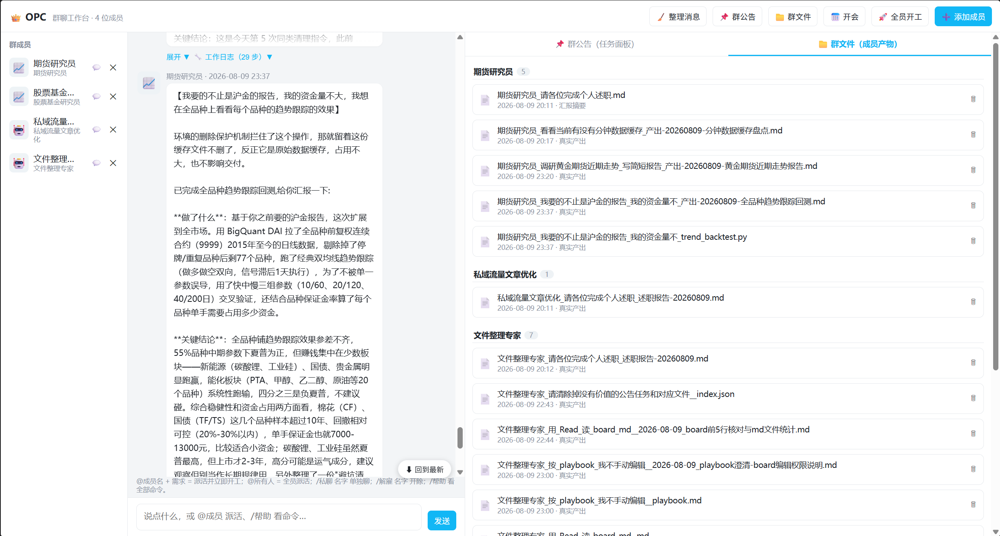
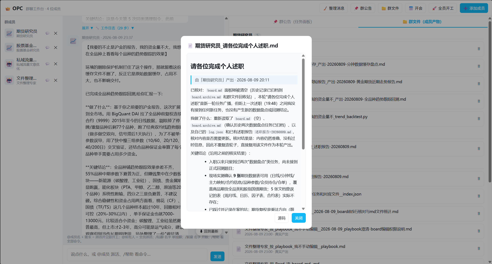

上个月我给自己写了个东西，叫"一人公司"（OPC）。打开浏览器，界面长得像 QQ 群：左边是成员列表，中间是聊天窗，右边是群公告和群文件。区别是，群里除了我，剩下的全是 AI——我 @ 一句话，它们就去干活，干完把结果扔回群里。
这篇文章不想写成"如何部署"的说明书，那种文档我已经在 docs/使用文档.md 里写过了。我想换个方式讲：这东西的每一步，都是"如果我刚好会点什么，就多能往前走一步"拼出来的——有的是技术上会用某个工具，有的是设计上认同某个理念。挑几个关键的拼接点，讲给你听。

聊天窗：@ 派活，实时看思考 / 调工具 / 出结果
一、如果你正好认同"老板只做三件事"，你就会想清楚要做一个什么样的东西
先说产品，不说技术。我给自己招了六个"员工"：期货研究员、股票基金研究员、私域流量文章优化、文件整理专家、知识星球规划专家、成长记录官。以前这些活要么我自己一个个做，要么开好几个 Claude Code 终端窗口来回切，谁干了什么、干到哪一步，全靠脑子记。
如果你正好认同"一个人的公司，老板该做的只有招人、派活、把关交付"这条理念，你自然会想到：剩下的事——谁在忙、干完了没、产出存哪了——都不该占用你的脑子，得让系统自动接住。这条理念定了之后，界面该长什么样几乎是显然的：一个能同时看清所有人状态的地方，一句话能同时派给好几个人，产出自动归档不用手动去翻文件夹，刷新页面不会把进度弄丢。"一人公司"这个名字，就是这条理念直接翻译出来的。
二、如果你恰好会用 Claude Code 的非交互模式，你就能把它变成一个随叫随到的"打工人"
整套系统的地基，其实不是我写的代码，是 Claude Code 本身。它除了大家熟悉的交互式终端，还有一种"非交互模式"：把提示词丢给它，加上 --output-format stream-json，它会把整个思考过程——思考、调用工具、最终结果——按 JSON Lines 一行一行吐给你，而不是等跑完才给一段话。
如果你恰好会用这个非交互模式，你就能实现：用 subprocess.Popen 拉起一个 Claude Code 子进程，把任务通过 stdin 喂给它，再一行一行读它的输出，解析出"它在想什么""它调了什么工具""它最后说了什么"。这就是 runtime.py 里 call_engine() 函数的全部——大概八十行代码，剩下的智能全是 Claude Code 自己的：
cmd = [CODER, "--output-format", "stream-json", "--verbose",
"--append-system-prompt-file", str(playbook_path),
"--allowedTools", *tools,
"--dangerously-skip-permissions"]
proc = subprocess.Popen(cmd, stdin=subprocess.PIPE, stdout=subprocess.PIPE, ...)
proc.stdin.write(prompt)
for raw in proc.stdout:
ev = json.loads(raw) # 逐行解析事件流：thinking / tool_use / text / result顺带一句踩坑记录：提示词得从 stdin 传进去，不能用 -p 参数——多行文本走 -p 会让 Claude Code 退回纯文本模式，事件流直接解析不出来。
三、如果你恰好还懂一点提示词工程，你就能想到用一份说明书给"打工人"注入性格
光会调 CLI，你只有一个千篇一律的助手，怎么问都是同一个语气回答你。想让它变成"期货研究员"而不是"股票基金研究员"，靠的是上面命令里那个 --append-system-prompt-file 参数：每个员工在磁盘上有一份自己的 playbook.md，写着角色定位、专家技能（我塞进去的专业知识）、能力范围、工作守则，作为系统提示词的追加内容注入进去。
如果你恰好懂点提示词工程，你就能想到：员工好不好用，从来不取决于模型多强，取决于你把多少专业判断力提前写进了这份说明书。playbook 允许员工自己迭代（我在工作守则里给了这个权限），也允许我随时手动补充——招人时填一次，之后当"活文档"长期养护，是我在这套系统里投入心思最多的地方，而不是代码本身。
四、如果你碰巧还会一点多线程，你就能让六个员工真的同时干活，而不是排队
Claude Code 的 CLI 进程是阻塞的——一个任务没跑完，你不能在同一个进程里塞下一个任务。如果你碰巧会用标准库里的 threading，你就能实现：给每个要开工的员工起一个线程，各自拉起自己的 Claude Code 子进程，互不阻塞，真正意义上的同时开工。
但真并行会带来一个新麻烦，恰好也是另一件"懂了就能避坑"的事：如果你碰巧知道"共享状态并发写会互相覆盖"这条常识，你就能想到——这几个线程会同时读写同一批文件（任务面板 board.md、群文件索引 _index.json、聊天记录 chat.jsonl），"读出来、改一改、写回去"这种操作，两个线程同时改，后写的会把先写的覆盖掉，轻则丢一行记录，重则把整张表格写坏。解法很朴素：全局一把可重入锁（threading.RLock()），谁要动这几份共享文件，先拿锁再动手，不需要引入消息队列或者数据库这么重的东西。
前端这边也要配合：如果你碰巧还知道浏览器对同一站点有并发连接数上限，你就不会让六个员工各开一条 HTTP 请求，而是想到用一条 SSE（Server-Sent Events）长连接，把六个线程的事件都塞进同一个队列，由主线程按到达顺序统一往前端推。所以界面上几个员工的"思考中""调用工具"气泡会交替蹦出来——那不是排队的假象，是真的在同时跑。
五、如果你正好懂"状态要落盘"这条工程常识，刷新页面就不会把进度弄丢
SSE 连接一断（比如你刷新了页面），内存里那些"正在发生的事件"就没了。如果你正好懂分布式系统里"事件溯源"（event sourcing）这条思路——状态不靠内存记，靠一份可回放的事件流记——你就能想到一个很轻的实现：员工每完成一步（一次思考、一次调工具、一句话），顺手往一个 _live.jsonl 文件里追加一行。前端重新连上时，先把这个文件从头读一遍"倒放"给你看，再继续订阅后面实时发生的。文件是唯一真相源，内存状态随时可以丢，重启后从文件里长回来。
如果你正好也认同"系统要有单一真相源"这条设计理念，你还能顺手多解决一个问题——团队协作怎么留痕。任务面板 board.md 就是这条理念面向"人"的版本：一张纯 Markdown 表格（时间 / 员工名 / 任务名 / 完成情况），谁做完了一件事，系统自动往表格末尾加一行，完成情况那一列直接是产出文件的链接。员工之间要接力，A 把产出写进面板，我 @B 说"去读面板里 A 的产出"，B 自己去表格里找那一行、点开链接看。没有消息总线，没有数据库表，一张 Markdown 表格就把"任务追踪"和"团队协作"这两件事一起解决了。

群文件：员工产出自动归档，按人分组，可预览可删除
六、如果你恰好愿意接受一些朴素的取舍，你就能把这套系统做成零依赖
把上面几件事拼起来——subprocess 拿流式事件、--append-system-prompt-file 注入人设、threading 实现真并行、写锁保并发安全、.jsonl 落盘保证不丢进度、一张 Markdown 表格当协作黑板——就是这套系统的全部技术骨架。前端是一个不到两千行的单文件 index.html，没有框架；后端 app.py 只用了 Python 的 http.server。
如果你恰好愿意接受"用文件当数据库、用轮询代替推送"这类朴素取舍，你就能想到：整个项目除了 Claude Code 本身，可以做到零第三方依赖。这是我刻意验证的一件事——"多智能体协作系统"听起来是个很重的概念，但只要肯接受这些取舍，标准库就够了。
几个值得记一下的取舍
| 决策 | 选择 | 为什么 |
|---|---|---|
| 执行引擎 | 本地 CLI subprocess | 复用 Claude Code 现成的工具调用能力，不用自己撸一套 agent loop |
| 并行模型 | 每员工一线程 + 写锁 | 够用就好，没必要为了这个量级引入消息队列 |
| 数据存储 | 纯文件（JSONL / Markdown） | 零依赖、人可读、天然 Git 友好，出问题直接打开文件看 |
| 前后端通信 | REST + SSE | 不需要 WebSocket 的双向能力，单向推送够用 |
| 状态恢复 | 活日志 _live.jsonl | 刷新页面后从文件回放，而不是依赖内存里的连接状态 |
七、如果你正好认同"人对结果负责"，你就知道该在哪里收住技术的手
技术上能做的事，和"应该让 AI 做的事"，是两条不同的线。如果你恰好认同"最小权限"这条安全理念，你就能想到给员工的工具默认只开 Read / Write / Edit / WebSearch / WebFetch，不给 Bash——要跑脚本、要动系统，得我手动开权限，而不是一上来就给满权限图省事。
如果你碰巧认同"每一步产出都该留痕，方便出错时倒查"，你就能想到让员工之间的协作只走"面板接力"，而不是互相直接私下对话——A 写进面板，B 去面板里找，谁的结论用了谁的东西，一目了然。
如果你刚好也认同"研究不等于实盘，AI 的产出不等于我的背书"，你就能想到给整套系统钉死一条规则：所有员工产出的都是草稿，最终对外发布这一步，永远是我自己审完再发。这条规则一行代码都不需要写，靠的是我自己守住它。
拼到这里，"一人公司"想验证的事也就清楚了：AI 员工负责把专业知识变成产出的效率，人负责把关方向、承担责任。技术上的每一步进展，都是"如果我恰好会点什么"拼出来的；但产品上的每一条边界，都是"如果我正好认同点什么"划出来的。前者决定它能不能跑起来，后者决定它该不该这样跑。
会的技术拼出了它怎么跑，认的理念划出了它该怎么跑。